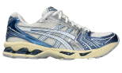

ASICS GEL-KAYANO 14
$155.00
Sold Out

Sold Out
Sold Out

Size: 6.5 UK
ASICS GEL-KAYANO 14
$155.00
Size: 6.5 UK
The GEL-KAYANO 14 sneaker resurfaces with its late 2000s aesthetic as a nod to our storied GEL-KAYANO series. Reinterpreting the shoe's performance capabilities with updated materials and componentry, this version became the first iteration in the sneaker's lineage to be designed by someone other than Toshikazu Kayano. Inspired by the original tooling from 2008, this shoe also features GEL technology underfoot for advanced impact absorption.
Style #: 1203A537.102
Original inspired tooling
2000s design language
GEL technology cushioning provides excellent shock absorption
TRUSSTIC support system
The sockliner is produced with the solution dyeing process that reduces water usage by approximately 33% and carbon emissions by approximately 45% compared to the conventional dyeing technology
The ASICS GEL-KAYANO 14 is available at various online and physical retailers. Prices typically range from $140 to $160 depending on size, colorway, and availability. Popular platforms like ASICS Official Store, Amazon, Foot Locker, and Zappos offer these sneakers with options for free shipping or discounts on certain models. Be sure to check for seasonal sales or limited-time offers when shopping, as prices can vary. Zappos and Amazon often feature customer reviews and size guides to assist with the purchasing process.